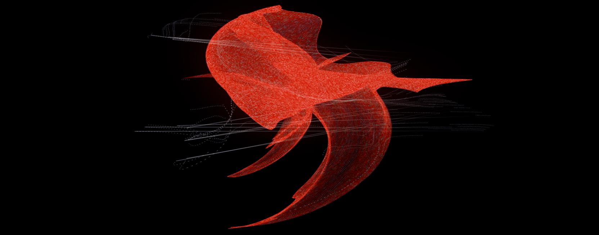

Alberto Barberis _ electronics, visuals
Elena Rivoltini _ vocal arrangements, live voice
Rajan Craveri _ 3D algorithms
Elena Rivoltini _ vocal arrangements, live voice
Rajan Craveri _ 3D algorithms

Two musicians, a console table and a 3D video projected on a maxi screen behind them and on the ground. A simple and essential setting. Electronic music. Opera voice. An algorithm that translates the sound spectrum into 3D geometric shapes: there’s a direct link between what is seen and what is heard.
Virtual oratorio is an A/V electroacoustic rework of the oratorio St John the Baptist, a sacred composition written for performance on Palm Sunday in the Holy Year of 1675 by Alessandro Stradella.
Elena sings opera arias live, with baroque lyrical technique. Her voice is processed in real-time by Alberto and put together with live noise electroacoustic music. Arias alternate with a modern reinterpretation of recitativo parts, spoken into microphone. The text is taken from original libretto written by cardinal Ansaldo Ansaldi.
The story is about the prophet John the Baptist, beheaded on Salomé’s whim. In the last scene the princess holds the bloody head of the prophet on a silver platter repeating as a lullaby her own sentence: «Bring on a silver tray the head of John the Baptist. I demand his head».
The performance is completely live: each sound is created in real time and put together with visual, textual and body language. The audience is thrown into an immersive synaesthetic universe, floating between sound and vision. Commissioned by Eutopia Ensemble and forevergreen.fm, Virtual oratorio was presented in a first version at Villa del Principe (Genoa - IT) for Electropark 2019, Le Strade del Suono and Le vie del Barocco.



Commissioned by the Eutopia Ensemble and Forevergreen.fm the opera was presented in its frst version for Electropark 2019, Le Strade del Suono and Le vie del Barocco (October 16, 2019 at Villa del Principe, Genova - IT).
Copyright ©2019 Alberto Barberis. All rights reserved.